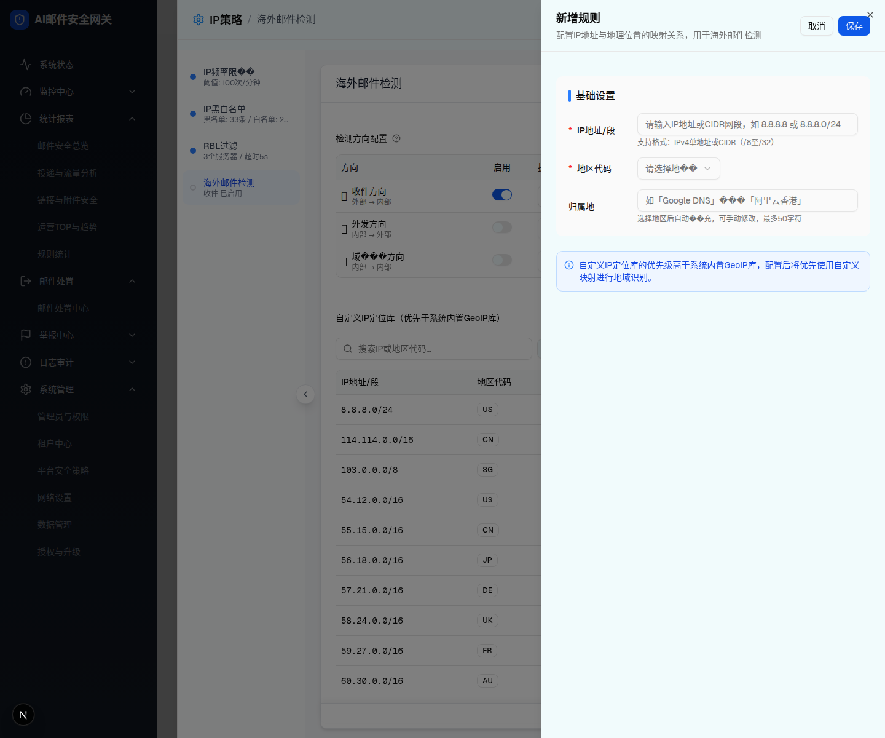

海外邮件检测 / 自定义 IP 定位库 / 新增规则抽屉。
| 所属组件 | 2.3 自定义 IP 定位库（GeoIP Rule Table） |
| 主文件 | index.html |
| demo 入口 | connection-layer-page.tsx L2152+ <Sheet> 组件（L2152-L2258） |
| 触发路径 | 层级0 GeoIP 表格工具栏 → 点击「新增规则」按钮（也支持空态立即创建）→ setShowGeoIpDialog(true) 打开 Sheet |
| 抽屉尺寸 | w-[560px] sm:max-w-[560px]，从右侧滑入 |
| 行为分支 | editingGeoIp=null → 新增；editingGeoIp=rule → 编辑（IP 段输入框 disabled） |

| 元素 | 类型 | 文案/属性 | i18n key | 交互 |
|---|---|---|---|---|
| Sheet 标题 | h2 | 「新增规则」/「编辑映射」（按 editingGeoIp 判断） | connection.createGeoIpRule / connection.editGeoIpRule | 无 |
| Sheet 描述 | p | 「配置 IP 地址与地理位置的映射关系，用于海外邮件检测」 | connection.geoIpRuleDesc | 无 |
| 取消按钮 | Button outline | 「取消」 | common.cancel | 点关闭 Sheet + 清空 errors |
| 保存按钮 | Button primary | 「保存」 | common.save | 点触发校验 → 通过则关闭 + setHasUnsavedChanges(true)；否则设置 geoErrors |
| 字段 | 类型 | 必填 | 占位符 | 校验规则 | 错误文案 | i18n key |
|---|---|---|---|---|---|---|
| IP 地址/段 | Input | 是 | 「请输入 IP 地址或 CIDR 网段，如 8.8.8.8 或 8.8.8.0/24」 | 非空校验；IP 为唯一键，创建后不可编辑，编辑模式下 disabled；label 旁显示 Info tooltip 与提示文案「IP 段为唯一标识，不可修改；如需变更请删除后重新添加」 | 「请输入 IP 地址或 CIDR 网段」 | connection.ipRange / connection.ipRangePlaceholder / connection.ipRangeRequired / connection.ipRangeLockedHint |
| 地区代码 | Select | 是 | 「请选择地区」 | 必选 | 「请选择地区代码」 | connection.regionCode / connection.selectRegion / connection.regionCodeRequired |
| 归属地 | Input | 否 | 「如「Google DNS」或「阿里云香港」」 | maxLength 50；选择地区后自动填充（除非手动修改过） | — | connection.regionName / connection.regionNamePlaceholder / connection.autoFillHint |
| value | 显示 | i18n key |
|---|---|---|
CN | 中国 (CN) | connection.countryCN |
US | 美国 (US) | connection.countryUS |
HK | 中国香港 (HK) | connection.countryHK |
SG | 新加坡 (SG) | connection.countrySG |
JP | 日本 (JP) | connection.countryJP |
AU | 澳大利亚 (AU) | connection.countryAU |
GB | 英国 (GB) | connection.countryGB |
DE | 德国 (DE) | connection.countryDE |
FR | 法国 (FR) | connection.countryFR |
KR | 韩国 (KR) | connection.countryKR |
注意：demo 仅 10 个常用国家，spec 未规定完整 ISO 列表。完整 ISO 3166-1 alpha-2 约 250 国家/地区，是否扩展需确认（见主文件 Q-03）。
| 容器 | bg-blue-50 + border-blue-200 + text-blue-700 |
| 图标 | Info icon (h-4 w-4) |
| 文案 | 「自定义 IP 定位库的优先级高于系统内置 GeoIP 库，配置后将优先使用自定义映射进行地域识别。」 |
| i18n key | connection.geoIpTip |
const handleSave = () => {
const errs: { ip?: string; region?: string } = {};
// IP 段非空校验
if (!geoFormIp.trim()) {
errs.ip = t("connection.ipRangeRequired");
}
// 地区代码必选
if (!geoFormRegion) {
errs.region = t("connection.regionCodeRequired");
}
setGeoErrors(errs);
// 有错误则阻止保存
if (Object.keys(errs).length > 0) return;
// 通过则关闭 Sheet + 标记有未保存更改
setShowGeoIpDialog(false);
setHasUnsavedChanges(true);
};| 地区代码选中时 | 如 geoFormRegionDirty=false，自动 set geoFormRegionName = 该国家 i18n（如 "美国"） |
| 归属地手动输入时 | set geoFormRegionDirty=true，后续地区切换不再自动覆盖归属地 |
| 编辑模式 | IP 段输入框 disabled={!!editingGeoIp}，其它字段可编辑 |
| Sheet onOpenChange(false) | 关闭 Sheet 并清空 setGeoErrors({}) |
| 比对项 | demo 实际 DOM | 本规格 HTML 预览 | 是否一致 |
|---|---|---|---|
| Sheet 容器 | div[role="dialog"] / SheetContent，实测 rect 560×1200（右贴边 x=880），nodeCount≈47，控件 6 个（取消/保存/IP input/地区 combobox/归属地 input/Close） | div.sheet-panel width 560px | ✅（2026-07-13 实测） |
| Sheet Header | title + desc + 取消 + 保存 | 同 | ✅ |
| Sheet Header 标题 | "新增规则"（editingGeoIp=null） | "新增规则" | ✅ |
| Sheet Header 描述 | "配置IP地址与地理位置的映射关系，用于海外邮件检测" | 同 | ✅ |
| 表单字段数 | 3（IP 段 / 地区代码 / 归属地） | 3 | ✅ |
| 必填标识 | 红色 * 在 IP 段和地区代码 label | 同 | ✅ |
| IP 段占位符 | "请输入IP地址或CIDR网段，如 8.8.8.8 或 8.8.8.0/24" | 同 | ✅ |
| IP 段提示文案 | "支持格式：IPv4单地址或CIDR（/8至/32）" | 同 | ✅ |
| 地区代码 Select 占位符 | 实测渲染 "请选择地��"（i18n selectRegion UTF-8 损坏，应为"请选择地区代码"） | 预览用可读 "请选择地区" | ⚠️ 编码损坏（见主文件 §9） |
| 归属地 maxLength | 50 | 50 | ✅ |
| 归属地占位符 | 实测渲染 "如「Google DNS」���「阿里云香港」"（i18n regionNamePlaceholder 的"或"损坏） | 预览用可读 "…或…" | ⚠️ 编码损坏（见主文件 §9） |
| 归属地提示文案 | 实测渲染 "选择地区后自动��充，可手动修改，最多50字符"（i18n autoFillHint 的"填"损坏） | 预览用可读 "自动填充" | ⚠️ 编码损坏（见主文件 §9） |
| 底部 Info 提示框 | 已渲染（div.flex 包含 svg + p） | 已渲染 | ✅ |
| 国家 SelectContent | 10 个 SelectItem（CN/US/HK/SG/JP/AU/GB/DE/FR/KR） | 本预览未展开下拉（仅 trigger 可见） | N/A（trigger 一致） |
| 校验错误时 Input 红框 | aria-invalid="true" + border red | 本预览默认无错误态 | N/A（错误态需触发保存校验） |
| 差异点 | 新增模式 | 编辑模式 |
|---|---|---|
| Sheet 标题 | 「新增规则」 | 「编辑映射」 |
| Sheet Header 描述 | 同 | 同 |
| IP 段输入框 | 可编辑 | disabled（IP 为唯一键，创建后不可编辑） |
| IP 段约束说明 | 仅显示格式提示 ipRangeFormat | label 旁显示 Info tooltip，输入框下方提示文案切换为「IP 段为唯一标识，不可修改；如需变更请删除后重新添加」（ipRangeLockedHint） |
| 地区代码 Select | 可编辑 | 可编辑 |
| 归属地 Input | 可编辑 | 可编辑（保留 dirty 标记） |
| 触发源 | 工具栏「新增规则」/ 空态「立即创建」 | 表格行操作 → 编辑按钮 |
| editingGeoIp state | null | rule 对象 |
| key | 中文 | English |
|---|---|---|
connection.createGeoIpRule | 新增规则 | New Rule |
connection.editGeoIpRule | 编辑映射 | Edit Mapping |
connection.geoIpRuleDesc | 配置 IP 地址与地理位置的映射关系，用于海外邮件检测 | Configure IP→Region mapping for overseas mail detection |
connection.basicSettings | 基础设置 | Basic Settings |
connection.ipRangeRequired | 请输入 IP 地址或 CIDR 网段 | Please enter IP address or CIDR |
connection.ipRangeLockedHint | IP 段为唯一标识，不可修改；如需变更请删除后重新添加 | IP range is the unique identifier and cannot be modified. To change it, delete and re-add. |
connection.regionCodeRequired | 请选择地区代码 | Please select a region code |
connection.geoIpTip | 自定义 IP 定位库的优先级高于系统内置 GeoIP 库… | Custom IP geolocation DB has higher priority than… |